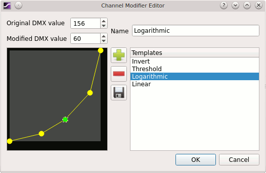

<html dir="ltr">
<head>
<title>Q Light Controller Plus - Channel Properties Configuration</title>
<script src="utility.js" type="text/javascript"></script>
<link href="style.css" rel="stylesheet" type="text/css"></link>
  <meta charset="utf-8">
</head>
<BODY onLoad="replaceqrc()">


<h1> Channel Properties Configuration</h1>
<p>
ウィンドウには現在のUniverse,フィクスチャー, チャンネルの状態が表示されています。<br>
各フィクスチャーの右側には設定可能なオプションが表示されており、各チャンネル毎に設定を変更することが可能です。<br>

<h2>設定項目</h2>

<table border="1" class="qlcTable">
 <tr>
  <td><b>Can fade</b></td>
  <td>チャンネルをフェードインやフェードアウト、クロスフェードなどの操作をした時にこのチャンネルもフェードさせるかどうか設定ができます。<br>
全てのチャンネルはデフォルトでチェックが入っています、よって全てのチャネルがデフォルトでフェードインやフエードアウトなどの制御が可能です。<br>
このチェックを外すとこのチャンネルはフェードしなくなります。
（例）DMXレベルが20のチャンネルを200に変更したとすると、DMXが次の信号を送信する時には即座に200が出力されるようになります。<br>
ムービングなどのモータを操作するチャンネルであり、即座に狙った場所に動かしたい時などにはチェックを外すと便利です。
  </td>
 </tr>
 <tr>
  <td><b>Behaviour</b></td>
  <td>このチャネルを<a href="./concept.html#HTP">HTP</a>にするか<a href="./concept.html#LTP">LTP</a>にするか設定できます。チャンネルを編集すると、変更の目印として表示されている文字が赤くなります。<br>
      <b>
※この設定上級者向けの設定項目です。HTPとLTPを理解した上で設定を変更してください。</b>
  </td>
 </tr>
 <tr>
  <td><b>Modifier</b></td>
  <td>調光カーブを設定する上でとても便利なツールです。ここで設定した調光カーブは<a href="./concept.html#GrandMaster">最終的なDMX値</a>として各フィクスチャーへ送信されます。<br>
デフォルトでは、全てのチャンネルが"Liner"に設定されており、デフォルト状態の場合には画面上には"..."が表示されています。
"Liner"では、調光カーブは直線になり、DMXレベルと同じ値がフィクスチャーへ送信されます。(例　0-0, 1-1, ...,255-255)<br>このボタンをクリックすると後述の"Channel Modifier Editor"が表示されます。
 </td></tr>
</table>

<br>
同じ種類のフィクスチャーが複数個ある場合でも簡単に設定できるように、「同じ属性の機器にも同じ変更を適用」にチェックすることで一括で設定が可能です。<br>
この項目にチェックを入れると、画面に表示されている同じ種類のフィクスチャー全ての設定項目が自動で変更されるようになります。<br>
この機能をつかうことで設定作業がスピーディに進みます。
</p>

<h2>Channel Modifier Editor</h2>

<p>
"channel modifier editor"では調光カーブを簡単に設定することができます。<br>

<br><br>
ウィンドウの右側にはプリセットの調光カーブが表示されています。<br>このプリセット名をクリックすることで、ウィンドウ左に調光カーブを呼び出すことができます。<br>
調光カーブはレベルの変化に応じてDMX値をどう変化させるかを設定できるものです。<br>
ライン上にある点(ハンドラー)をドラッグすることで調光カーブを編集することができます。点(ハンドラー)は無限に増やしたり、消したりできますが、レベル０とレベル255の２点は消すことができません。<br>
X軸方向にはレベル、Y軸方向にはDMXで送信される値をとります。<br>
点(ハンドル)をクリックすると上部にX(Original DMX value)とY(Modified DMX value)の数値が表示されます。<br>
点(ハンドル)はドラッグしたり、上部の数値を直接入力しても編集できます。<br>
<br>
QLC+では一般的な調光カーブをプリセットとして用意してあります。<br>
例えば"Invert"では、 DMX値を反転させるプリセットです。ムービングなどの動作を逆向きにしたい時などに便利なプリセットです。<br>また、"Logarithmic"では、LED光源のフィクスチャーをハロゲン光源のフィクスチャーの調光に似せることができます。<br>
新しいプリセットを作成するには既存のプリセットを選択し、必要に応じて点(ハンドラー)を追加もしくは削除し調光カーブを編集後新しい名前をつけ保存することで設定できます。<br>
編集が完了したら保存ボタンをクリックし、プリセットに保存します。ここで作成したプリセットが保存されたファイルの保存場所は
<a href="./questionsandanswers.html">よくある質問</a>をみて確認してください。
</p>

</BODY>
</html>
